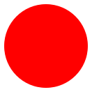

7.0
2 Meta Katas
 Core Values Kata (1 minute.)
Hand motions can make these easier to remember and repeat. For example: ’It’s not about my code.’ Point to computer. ’It’s about what I can code.’ Point to brain."
Teaching Tip: Depending on the size of your class, you may want to challenge them to rattle these off 1 by 1, in pairs or small groups, or as an entire class.
Can recite the first two ThoughtSTEM core values
It’s not about my code. It’s about what I can code.
It’s not about me. It’s about my team.